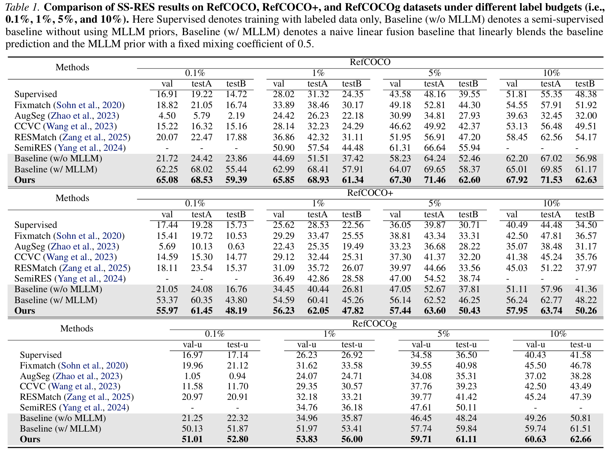

A reinforced self-evolving framework for reliable pseudo-label construction in semi-supervised referring expression segmentation.
Semi-supervised referring expression segmentation (SS-RES) aims to achieve precise pixel-level language grounding under limited annotation, yet suffers from limited supervision and unreliable pseudo-labels when exploiting unlabeled image-text pairs. In this work, we propose Learning to Label, a reinforced self-evolving framework (L2L) that casts pseudo-label construction as a learnable decision-making process. To build foundational understanding, we leverage a multimodal large language model to extract semantic-spatial priors, which are instantiated as initial soft segmentation proposals and elevated, together with textual cues, into learnable guidance signals that condition a hierarchical segmentation network. To ensure stable learning, reinforced pseudo-label selection is formulated as an exploratory decision process that adaptively rewards high-utility pixel-level supervision based on multimodal priors and model predictions. This reinforced self-evolving loop enables joint optimization of the segmentation model and pseudo-labels, progressively enhancing label reliability under sparse supervision. Extensive experiments on RefCOCO, RefCOCO+, and RefCOCOg demonstrate improvements over existing methods, validating its effectiveness and generalization.
Casts pseudo-label construction as a learnable decision-making process rather than a fixed heuristic.
Uses an MLLM to extract semantic-spatial priors and convert them into guidance for hierarchical segmentation.
Jointly optimizes the segmentation model and pseudo-labels to improve label reliability under sparse supervision.

If you find this work useful, please consider citing it.
@inproceedings{cao2026learning,
title={Learning to Label: A Reinforced Self-Evolving Framework for Semi-supervised Referring Expression Segmentation},
author={Cao, Runlong and Zang, Ying and Zhou, Chuanwei and Chen, Tianrun and Zhang, Tong and Cui, Zhen and Xu, Chunyan},
booktitle={Proceedings of the 43rd International Conference on Machine Learning},
year={2026}
}